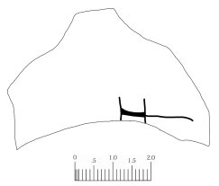
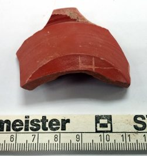

Grafito con la lectura «H» sobre cerámica (Cara, Santacara, Navarra)
Cara (Santacara, Navarra), Hispania citerior




Texto
1H
Descripción
- Soporte
- Fragmento de terra sigillata.
- Disposición
- Localización en la pieza: En la pared exterior.
- Lugar de origen
- Cara (Santacara, Navarra), Hispania citerior
- Hallazgo
- Excavaciones de M.A. Mezquíriz en Santacara, campaña de 1982. Referencia de caja: Santacara 82. Finca Fernando. Sector A.
- Ubicación actual
- Almacén de Arqueología del Gobierno de Navarra
- Sigla
- Santacara 82. Finca Fernando. Sector A.
Bibliografía
- P. Ozcáriz Gil, ««Excavando» en lo ya excavado: grafitos epigráficos de la campaña de 1982 de la ciudad romana de Cara (Santacara, Navarra)», Studia Storica in honorem Prof. Urbano Espinosa Ruiz (2018), pp. 109-131.
Cómo citar esta ficha
Ozcáriz Gil, P., Grafitos sobre cerámica romana: corpus EpiDoc, ficha cara-009-h, https://pozcariz.github.io/grafitos-epidoc/cara-009-h.html.